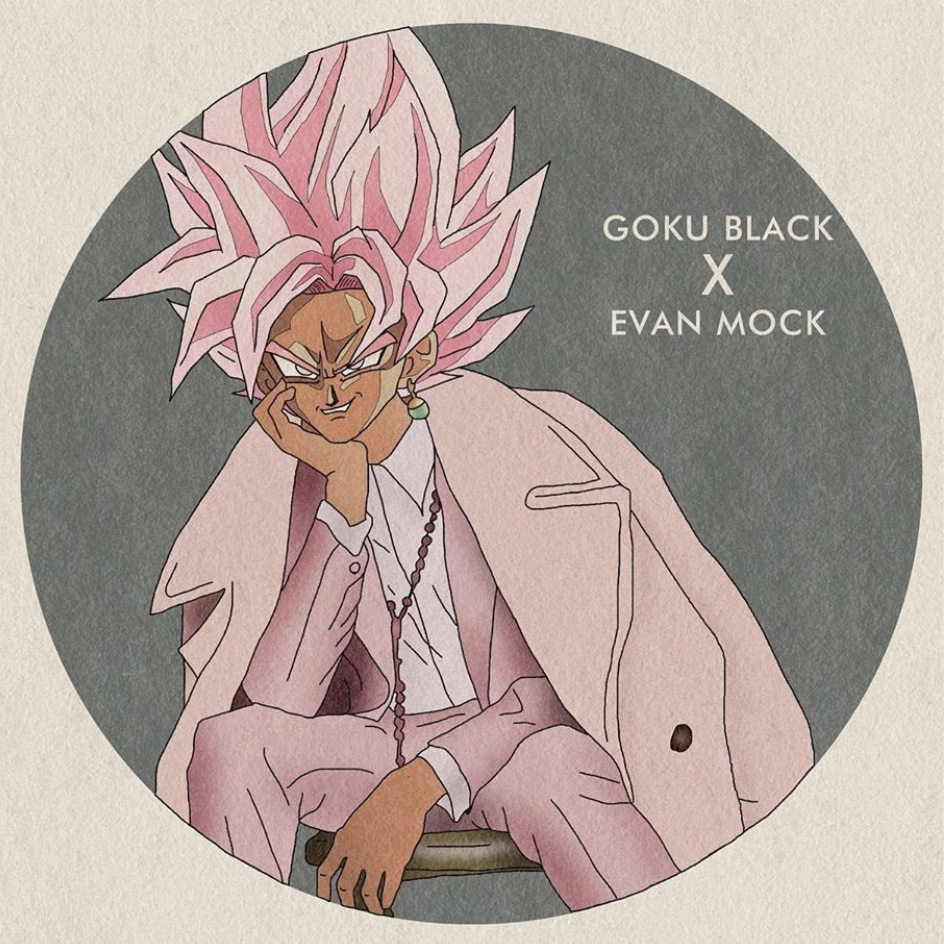

Je promeus ce mois-ci @osharena_. Il a récemment percé sur les réseaux avec une idée originale. Le principe de ses dessins est de reprendre un personnage d'animé et de le revêtir d'habits d'une marque de luxe. Les personnages sont redessinés, et le style de ces derniers rend un visuel incroyable. Il a posté pour la première fois le 26 avril et compte aujourd'hui plus de 3825 abonnés et 82 personnages. Toute la complexité des oeuvres résident dans la difficulté a bien redessiné le style vestimentaire d'une marque spécifique sur un personnage de manga. Cette récente popularité lui a permis d'ouvrir un e-shop dans lequel on peut acheter les oeuvres de l'artiste. Je vous laisse ci-dessous quelques unes de ses oeuvres, son instagram & un lien vers son shop. Au plaisir pour un nouveau focus :)
RETROUVEZ TOUS LES FOCUS

Osharena
Août 2020